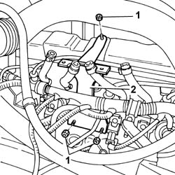
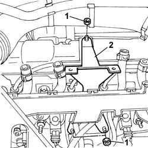

1058A72 SUPPORT FOR CNG INJECTOR HOLDER BRACKET - R.R.
- Path
- Procedures > 10 ENGINE UNIT > 1058 GAS CIRCUIT > 1058A GAS CIRCUIT MULTI POINT INJECTION > 1058A72 SUPPORT FOR CNG INJECTOR HOLDER BRACKET - R.R.
- Kind
- repair procedure (removal / refitting; the operation number is the code)
- Applies to
- engines: 2.0 16V; all production periods
- Interactive page
- https://sloeber94.github.io/elrnDB-fDct/en/#/244000825
Applies to: engines: 2.0 16V; all production periods
 Removing
Removing
 Refitting
RefittingDrain the low pressure circuit as described in the operation:
Op. 1042A02 METHANE SYSTEM SAFETY SET UP
Disconnect the negative battery terminal.
Op. 1058A60 SINGLE CNG MANIFOLD PIPE COMPLETE WITH INJECTORS - R R
Applies to: engines: 2.0 16V; production: fino a 02/05
1. Undo the retaining nuts.
2. Remove the CNG single manifold pipe mount bracket.

Applies to: engines: 2.0 16V; production: da 03/05
1. Undo the retaining nuts.
2. Remove the CNG single manifold pipe mount bracket.

Applies to: engines: 2.0 16V; all production periods
Refitting
RemovingFit the CNG single manifold pipe mounting bracket and tighten the retaining nuts.
Op. 1058A60 SINGLE CNG MANIFOLD PIPE COMPLETE WITH INJECTORS - R R
Connect the negative battery terminal.